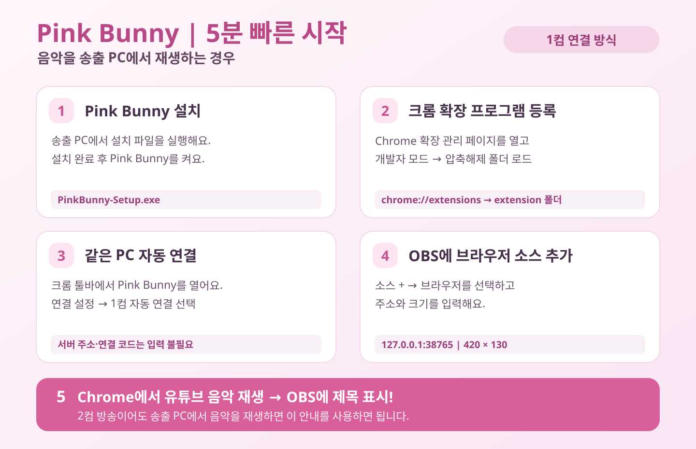
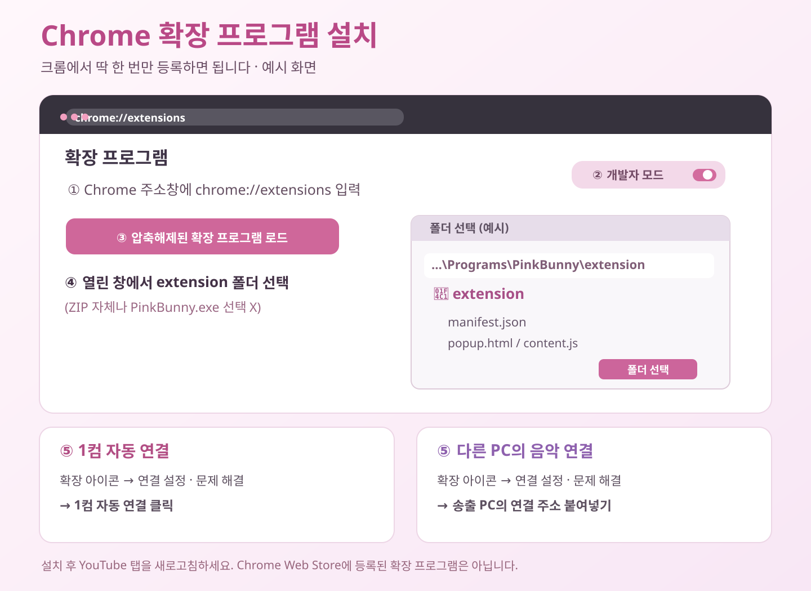
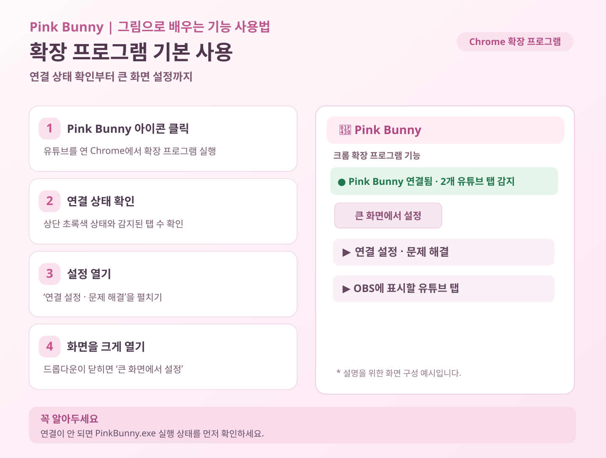
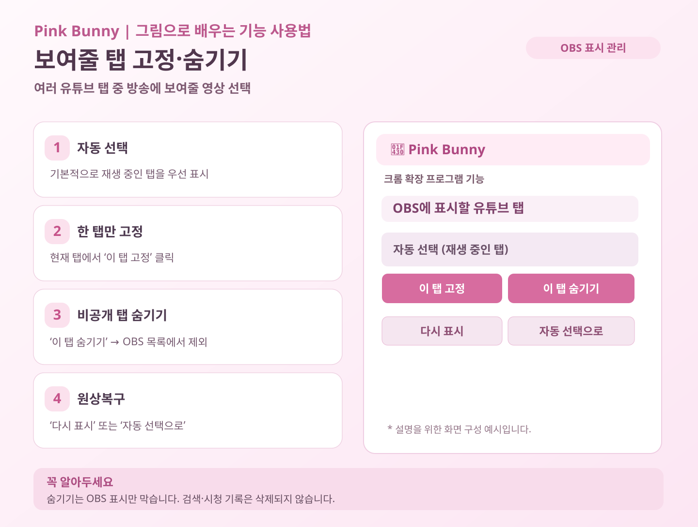
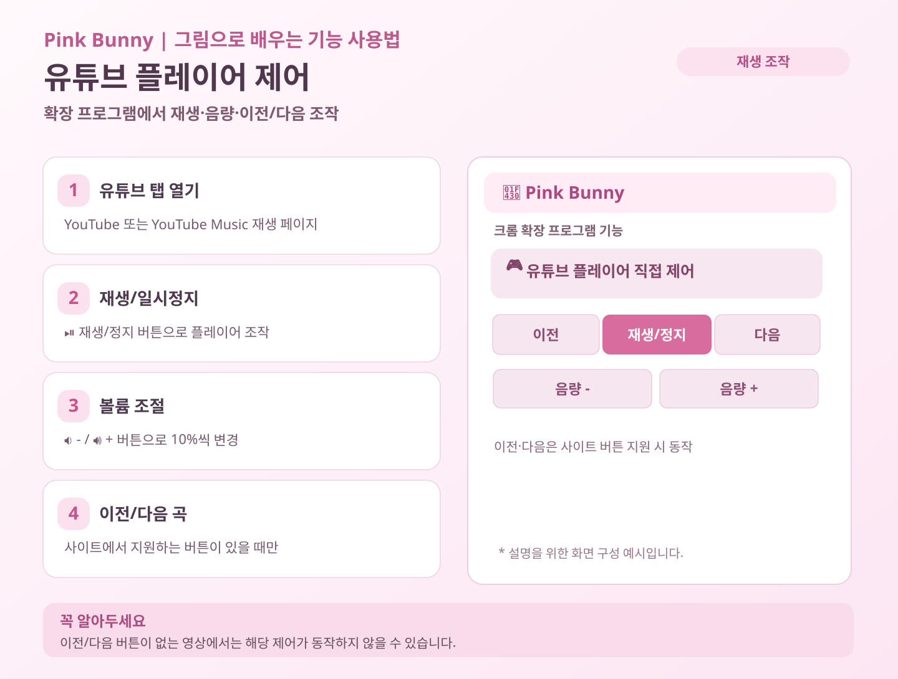
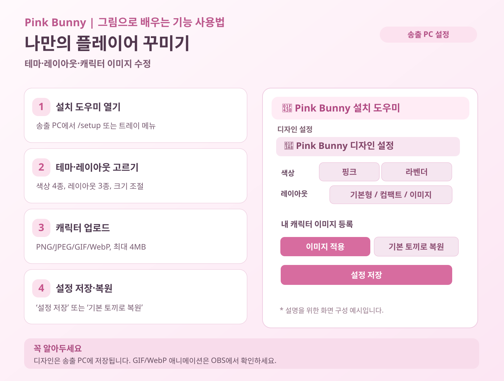
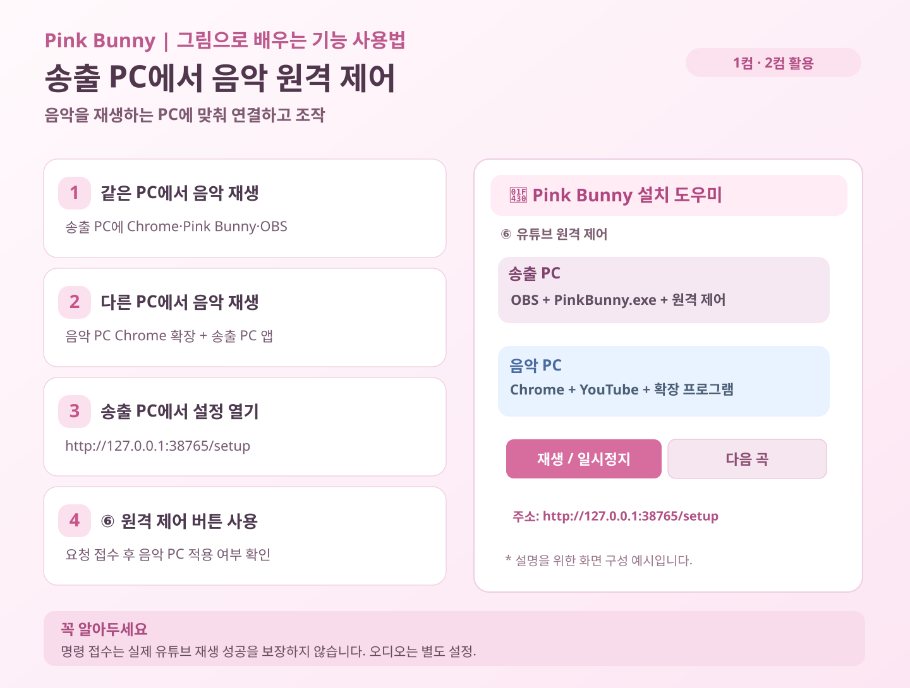
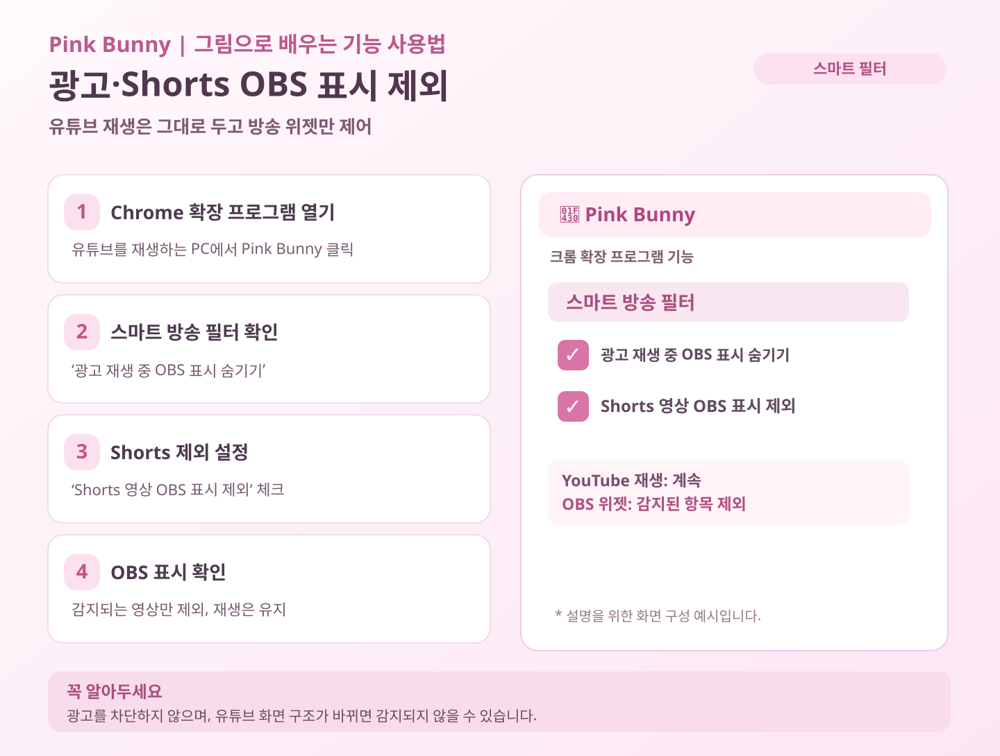
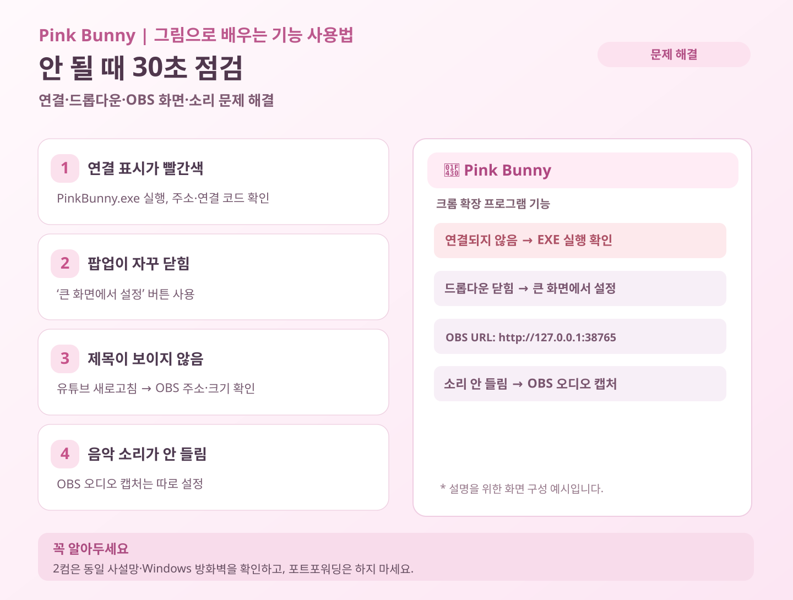

🐰 Pink Bunny 그림 사용 가이드
처음 설치하는 방법부터 실제 방송 기능 사용법까지 그림으로 안내합니다. 설치가 끝났다면 아래 ‘기능 사용’부터 확인하세요.
가장 먼저! 유튜브 음악을 어느 PC에서 재생하나요?
2컴 방송이어도 음악을 송출 PC에서 재생하면 이 안내를 선택하세요. 연결 코드는 입력하지 않아도 됩니다.

Chrome 확장 프로그램 등록하기
유튜브를 실제로 재생하는 PC의 Chrome에 확장 프로그램을 등록해야 합니다. 설치된 Pink Bunny 폴더의 extension 폴더를 선택하세요.

OBS 브라우저 소스 추가하기
OBS를 실행하는 송출 PC에서만 설정합니다. 브라우저 소스 주소는 항상 http://127.0.0.1:38765, 너비는 420, 높이는 130입니다.

✨ 설치 후에는? 기능 사용 그림 7장
먼저 아래에서 필요한 기능을 선택하세요. 제목을 누르면 그림과 설명이 펼쳐집니다.
확장 프로그램 기본 조작 — 그림·설명 펼치기
Chrome 툴바의 Pink Bunny를 연 뒤 상단 연결 상태를 확인하세요. ‘연결 설정 · 문제 해결’에서 1컴 자동 연결 또는 2컴 주소를 설정하고, 드롭다운이 불편하면 ‘큰 화면에서 설정’을 누르세요.

OBS 표시 탭 고정·숨김 — 그림·설명 펼치기
기본은 자동 선택입니다. 특정 탭은 ‘이 탭 고정’으로 유지하고, 공개하지 않을 탭은 ‘이 탭 숨기기’로 OBS 표시에서 제외할 수 있어요. 고정 해제는 ‘자동 선택으로’를 사용합니다.

유튜브 재생 제어 — 그림·설명 펼치기
확장 프로그램에서 재생·일시정지, 음량 ±10%를 조절할 수 있습니다. 이전·다음 곡은 유튜브가 해당 버튼을 제공할 때만 동작합니다.

방송 화면·캐릭터 꾸미기 — 그림·설명 펼치기
송출 PC의 설치 도우미 ‘Pink Bunny 디자인 설정’에서 테마와 레이아웃을 고르고, ‘내 캐릭터 이미지 등록’으로 PNG/JPEG/GIF/WebP 이미지를 올린 뒤 ‘설정 저장’을 누르세요.

1컴·2컴 원격 제어 — 그림·설명 펼치기
송출 PC에서 음악을 재생하면 1컴 방식으로 연결합니다. 다른 PC에서 음악을 재생하는 경우에만 2컴 연결 주소가 필요합니다. 송출 PC 설치 도우미의 ‘⑥ 유튜브 원격 제어’에서 명령을 요청할 수 있습니다.

광고·Shorts 스마트 방송 필터 — 그림·설명 펼치기
음악 PC 확장 프로그램의 ‘스마트 방송 필터’에서 광고 재생 중 숨김과 Shorts 제외를 각각 설정합니다. 유튜브 광고 자체를 차단하는 기능은 아닙니다.

연결·OBS·소리 문제 해결 — 그림·설명 펼치기
연결 실패는 송출 PC의 Pink Bunny 실행 여부와 연결 코드를 확인하세요. OBS 화면이 비면 브라우저 소스 주소·크기를 확인하고, 음악 소리가 안 들리면 OBS 오디오 캡처를 설정하세요.

안 될 때 가장 먼저 확인할 것
※ Pink Bunny는 영상 제목과 재생 정보를 OBS에 보여줍니다. 음악 소리 전송은 별도 OBS 오디오 설정이 필요해요. 두 PC 연결은 같은 신뢰할 수 있는 사설망에서만 사용하고, 연결 주소의 인증 코드를 공개하지 마세요.